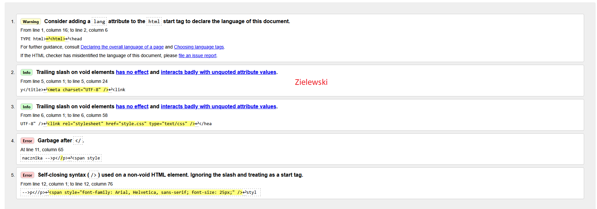
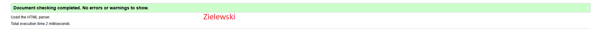

1.)Co to jest walidacja?
Walidacja to proces sprawdzania kodu strony internetowej pod kątem błędów składniowych i zgodności ze standardami ustalonymi przez W3C (World Wide Web Consortium).
2.)Podaj rodzaje walidacji
Walidacja po stronie klienta (Client-side)
Walidacja po stronie serwera (Server-side)
3.)Co umie wskazać walidator (dwie informacje)
Walidatory potrafią, wskazać miejsce błędu oraz podać przyczynę błędu mogą podawać numer błędu.

